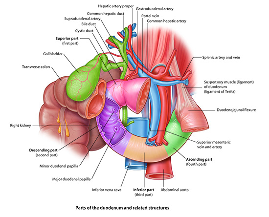

Stomach, Liver, Spleen: Module 2 - Page 6 of 7
|  |
| Click on image to enlarge |
| Add the cystic duct which connects the gallbladder to the biliary tree. | |
| Add the pancreatic duct. | |
| Add the duodenum. | |
| Add the pancreas. |
| Review the embryology of this area and appreciate the relationships to the organs and blood supply of this area. | |
| Add and subtract organs and blood suppy in this area to obtain a better understanding of these relationships. |